Food | อาหาร
| English | Thai | ไทย |
|---|---|---|
| eat | Kin | กิน |
| hungry | Hiu | หิว |
| delicious | Aroi | อร่อย |
| spicy | Phet | เผ็ด |
| salty | Kem | เค็ม |
| sweet | Waan | หวาน |
| bitter | K̄hm | ขม |
| sour | Bpriao | เปรี้ยว |
| bon appetit | Dī Māk | ดีมาก |
| take away | Ow Glap Baan | เอากลับบ้าน |
| eat here | Thaan Thee Nee | ทานที่นี่ |
| breakfast | Aahaan Chao | อาหารเช้า |
| cold | Yen | เย็น |
| hot | Rone | ร้อน |
| baked | Ob | อบ |
| fried | Tod | ทอด |
| grilled | Yāng | ย่าง |
| roasted | Khạ̀w | คั่ว |
| steamed | Nụ̀ng | นึ่ง |
Noodle | พาสต้า
| (English) Thai | ไทย | |
|---|---|---|
| (rice vermicelli) Sen Mee | เส้นหมี่ | |
| (rice stick noodles) Sen Lek | เส้นเล็ก | |
| (wide rice noodles) Sen Yai | เส้นใหญ่ | |
| 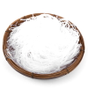 | (glass noodles) Wun Sen | วุ้นเส้น |
 |
(egg noodles) Sen Ba-Mee | เส้นบะหมี่ |
| 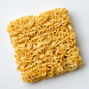 | (instant noodles) | บะหมี่กึ่งสำเร็จรูป |
Fruits | ผลไม้
| (English) Thai | ไทย | |
|---|---|---|
| 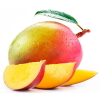 | (mango) Ma-muang | มะม่วง |
| 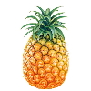 | (pineapple) Sapparot | สับปะรด |
 |
(watermelon) Taeng Mo | แตงโม |
| (papaya) Ma-lagor | มะละกอ | |
| (coconut) Ma-prau | มะพร้าว | |
 |
(banana) Gluay | กล้วย |
| (durian) Turien | ทุเรียน | |
| (jackfruit) Khanun | ขนุน | |
| (mangosteen) Mangkut | มังคุด | |
| (salak fruit) Sala | สละ | |
| (orange) Som | ส้ม | |
| 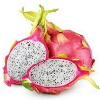 | (pitaya) Gaew Manggorn | แก้วมังกร |
| 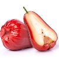 | (java apple) Chompu | ชมพู่ |
| (guava) Farang | ฝรั่ง | |
| (rambutan) Ngo | เงาะ | |
| (lychee) Linchi | ลิ้นจี่ | |
| (longan) Lam Yai | ลำไย | |
| 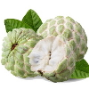 | (cinnamon apple) Noi Naa | น้อยหน่า |
| 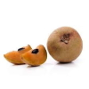 | (sapodilla) Lamut | ละมุด |
| (persimmons) Lôok-pláp | ลูกพลับ | |
| (pomelo) Sôm-oh | ส้มโอ | |
| (tamarind) Má-kăam | มะขาม | |
 |
(strawberry) Sà-dtror-ber-rêe | สตรอว์เบอร์รี่ |
| (starfruit) Má-feuang | มะเฟือง |
Vegetables | ผัก
| (English) Thai | ไทย | |
|---|---|---|
| (tomato) Má-kĕua Tâyt | มะเขือเทศ | |
| (salad) Pàk Gàat Hŏm | ผักกาดหอม | |
| (onion) Hŏm Hŭa Yài | หอมหัวใหญ่ | |
| (spinach) Pàk -kŏm | ผักโขม | |
| (cucumber) Dtaeng-Gwaa | แตงกวา | |
| (potato) Man Fà-ràng | มันฝรั่ง | |
| (cauliflower) Gà-làm Dòk | กะหล่ำดอก | |
| (mushroom) Hèt | เห็ด | |
| (corn) Kâao Pôht | ข้าว โพด | |
| (garlic) Grà Tiam | กระเทียม | |
| (carrot) Kae-rôt | แครอท | |
| (charlotte) Hŏm Daéng | หอมแดง | |
| (water spinach) Pàk Bûng | ผักบุ้ง | |
| (chili) Prík | พริก | |
| (lemon gras) Dtà-krái | ตะไคร้ | |
| (white cabbage) Gà-làm Bplee | กะหล่ำปลี | |
| (ginger) Kĭng | ขิง | |
| (watercress) Pàk Nám | ผักน้ำ | |
| (eggplant) Má-kĕua Yaao | มะเขือยาว |
Meals | จาน
| (English) Thai | ไทย | |
|---|---|---|
| (fried rice) Khao Pad | ข้าวผัด | |
| Pad Kra Pao | ผัดกะเพรา | |
| 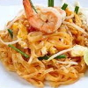 | Pad Thai | ผัดไทย |
 |
Som Tam | ส้มตำ |
| Khao Soi | ข้าวซอย | |
| Pad see ew | ผัดซีอิ๊ว | |
| Tom Kha Gai | ต้มข่าไก่ | |
| Guai Tiao Nam Sai | ก๋วยเตี๋ยวน้ำใส | |
| 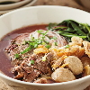 | Guai Tiao Nam Tok | ก๋วยเตี๋ยวเรือ |
| 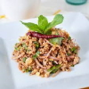 | Larb | ลาบ |
| Pad Kana Moo Grob | ผัดคะน้าหมูกรอบ | |
| 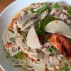 | Yam Woonsen | ยำวุ้นเส้น |
| Pad Prik Gaeng | ผัดพริกแกง | |
| 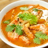 | Tom Yam | ต้มยำ |
| Gaeng Kiaw Wan | แกงเขียวหวาน | |
| Gaeng Panaeng | แกงพะแนง | |
| Gaeng Massaman | แกงมัสมั่น | |
| Pad Pak Bung | ผัดผักบุ้ง | |
| (red pork) Moo Daeng | หมูแดง | |
| (crispy pork) Moo Grob | หมูกรอบ | |
| (meatballs) Luk Chin Moo | ลูกชิ้น | |
| (pork meat) Moo | หมู | |
| (beef) Néua-wua | เนื้อวัว | |
| (shrimp) Goong | กุ้ง | |
| (fish) Pla | ปลา | |
| (vegetables) Pak | ผัก | |
 |
(butter) Noei | เนย |
| (jam) Yaem | แยม | |
| (egg) Khai | ไข่ | |
| (noodle) Guaitiaw | ก๋วยเตี๋ยว | |
| (rice) Kaao | ข้าว | |
| (chicken) Gai | ไก่ | |
| (chicken wings) Bpèek Gài | ปีกไก่ | |
| (sausage) Sâi Gròk | ไส้กรอก | |
| (bacon) Bay-kon | เบคอน | |
 |
(ham) Haem | แฮม |
| (seafood) Aa Hăan Tá-lay | อาหาร ทะเล | |
| (lobster) Gûng Gâam Graam | กุ้งก้ามกราม | |
| (tuna) Bplaa Too-nâa | ปลาทูน่า | |
| (crab) Bpoo | ปู | |
| (squid) Bplaa Mèuk | ปลาหมึก | |
 |
(fish ball) Luk Chin Bplaa | ลูกชิ้นปลา |
| (fried egg) Khidāw | ไข่ดาว | |
| (boiled egg) Khi Tim | ไข่ต้ม | |
| (sticky rice) Kâao Nĭeow | ข้าวเหนียว |